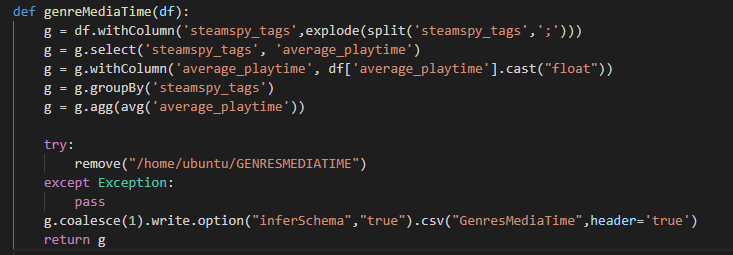
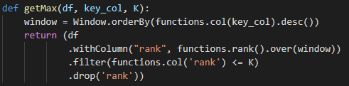
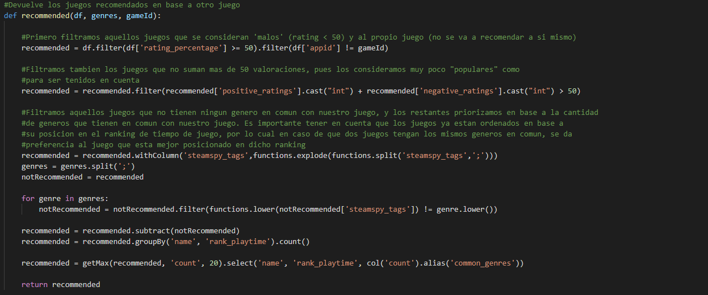

Software
Description
In this page you will find information about the
software design in our applications.
Extracting concrete data
In order to get results for our study, we had to separate information from the dataset and reorganize it in a new dataset that would only contain information about the columns that we desired.
We managed the data through spark dataframes and selected the colums we wanted to generate a new dataframe organised with the data we were going to need for the method. In this example, we select the steamspy_tags who correspond to the videogames genre with the average_playtime of each of the games. After that, we grouped the column we specified and managed the data from the other column to get the info we wannted. In this case, we grouped each videogame gennre and calculated the average playtime for each one of them.
We also included a script which has been used for getting the top elements from a specific column that we are analyzing. This method used pyspark window function to order by key the column given and getting top K elements from the data.
Videogame recommendation
We have also developed a system to recommend the player different videogames according to their favorite genres.
In this code, given another favorite game, it returns other 20 games that belong to the same genre. This codes try to filter between most upvoted videogames in order to recommend the most played games according to the given videogame. This method allows to show a player new videogames according to his most played applications. It uses spark dataframes to filter between most recommended videogames and genres. After that, it groups the results and order them by playtime to get the top 20 videogames that might be of interest to the user.